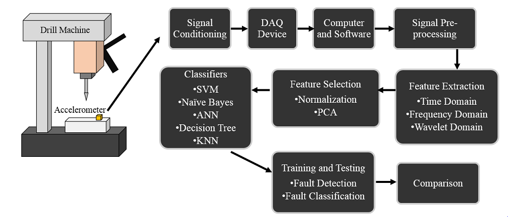
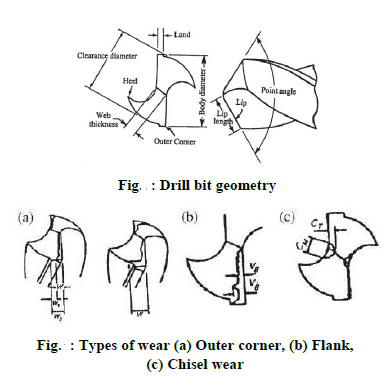
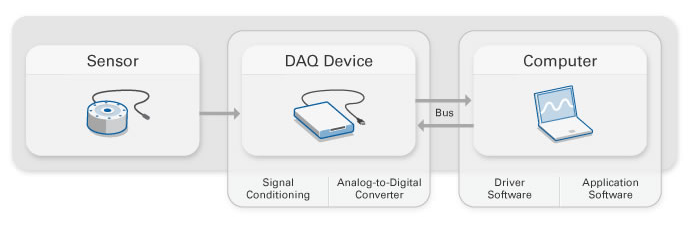
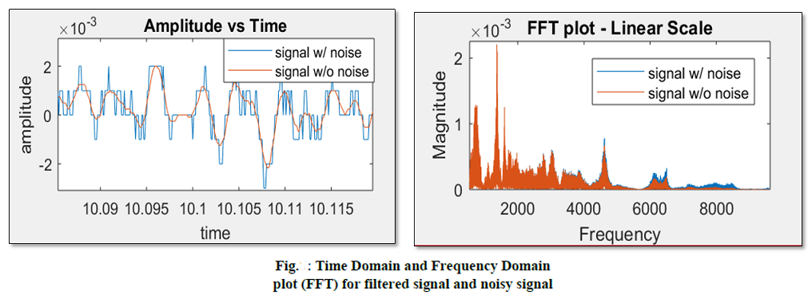
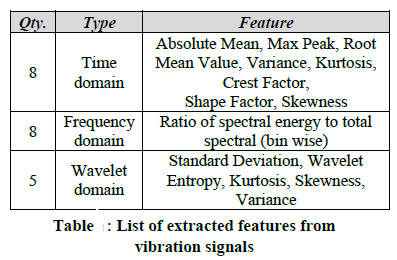
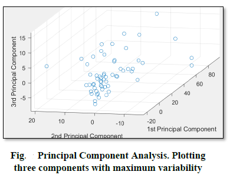
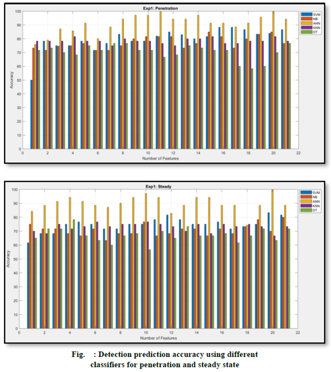
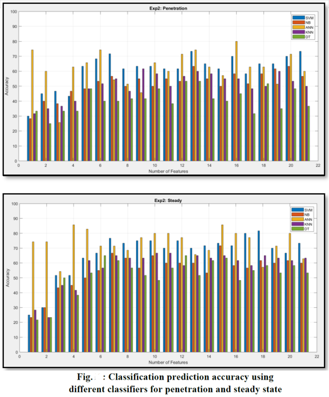
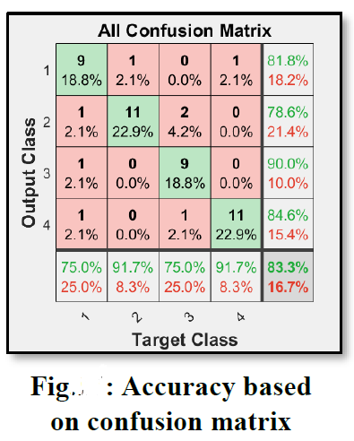

Project 2
Fault Detection & Prediction of Manufacturing Machines using Machine Learning
MOTIVATIOIN:
In manufacturing, ongoing maintenance of production line machinery and equipment represents a major expense, having a
crucial impact on the bottom line of any asset-reliant production operation. For this reason, predictive maintenance has
become an effective solution which can predict the failure.
This project proposes Machine Learning algorithms to detect
fault and tool wear in drill operations. Three different categories of drill bit wear along with a perfect drill bit are
investigated. Compared to the conventional fault detection ways, the proposed method is based on the analysing features
extracted from vibration signals which could help to monitor overall equipment effectiveness for the real industrial applications. A complete workflow from data acquisition to pre-processing to analysis has been presented. Twenty-five different models were trained and tested for assorted feed rates and cutting speeds. Five different AI classifiers have been tested against fault detection. The performance of these algorithms has been scrutinized based on several parameters and has been compared to establish the best among them for the real-world applications. The best model achieves about 90% accuracy in fault classification and detection and relies mainly on features extracted from frequency domain. The experimental results demonstrate the effectiveness of vibration signals and verify the ability of proposed artificial intelligence methods in fault diagnosis.
EXPERIMENTAL SETUP:
To conduct this experiment and measure the vibration signals, we need to follow some procedure. A schematic diagram for the
complete setup is shown below.

All the experiments were performed on a 3-Axis CNC EMCO Concept Mill 105 machine. The work piece material used
for this study was mild steel. A uniaxial accelerometer, (Model: PCB Piezotronics 603C01; Measurement Range: ± 50 g;
Sensitivity: 100 mV/g; Frequency Range: 0.5 to 10000Hz ) was mounted on the work piece. A uniaxial accelerometer measures
the vibrations in only one direction. We can use multi-axial accelerometer that can measure vibrations in three different
axes. These sensors produce electrical pulse when there is an effect of vibration.
To covert these electrical signals, we need a device which can convert signals to digital value which can be recorded for analysis. This device is called Data Acquisition
(DAQ) device. National Instrument’s DAQ card Chassis Model: NI cDAQ 9172; Card Model: NI9234; 4-channel; ± 5V; 24-bit software)
was used for digitization of the analog signals. Vibration signals from the experiment were recorded by a VI (visual interface)
developed on National Instrument’s LabView 8.0. NI LabVIEW is a system-design platform and development environment for a visual
programming language. The process of data acquisition, pre-processing, feature extraction, training and testing were carried out
on an Intel Centrino Dual Core Processor (2.0 GHZ and 3GB DDR3 RAM).

For this study, HSS twist drill with body diameter of 9mm was used. Three different kinds of drill bit defects shown in fig,
flank wear, chisel wear and outer corner wear were induced. This was done intentionally to produce variety of vibration signals
from each faulty drill bit. To make the data more informative, measurement with different cutting conditions were performed. 15
different drill sets were made combining three feed rates (4mm/min, 8mm/min, 12 mm/min) at five different speeds (160rpm, 170rpm,
180rpm, 190rpm, 200rpm). A fourth kind of drill bit was introduced to make the data set more complicated and to differentiate the
data. This drill bit was named as perfect drill bit, without any faults. To study the real effect of the fault and its behaviour,
measurements were taken both on steady and penetration state. The nomenclature, a complete geometry and the fault definition of
drill bits used for this study can be found in appendix 1. Actual pictures of the drill bit defects are attached as well for
visually understanding it.
METHODOLOGY:
This section is a combination of several parts which helps us to measure vibrations and analyse it. This includes crucial
steps before making AI algorithms. We will see all the parts step by step. For visually understanding the process, a process
flow chart is mentioned below:
A. Data Acquisition System: Data acquisition (DAQ) is the complete process from measuring an electrical or physical
phenomenon such as voltage, current, temperature, pressure, or sound with a computer to convert it some useful information.
This system consists of sensors (accelerometer) DAQ measurement hardware, and a computer with programmable software (NI LabVIEW).
Vibration signals were measured at the sampling rate of 32,768 samples/second for 8 seconds. This indicates that each data set
will have 262,144 reading of acceleration. The important thing to note that as per the Nyquist Shannon sampling theorem, the
highest frequency value we will get is half the sampling frequency, which is 16384 Hz in this project. Once the data is saved,
we can import the data in MATLAB workspace and can proceed for signal pre-processing.

B. Signal Pre-Processing: Before analysing the signals and using the AI algorithms, the best practice is to remove
the unwanted signals/noise from the raw data. A common challenge faced is how to filter noise from underlying signal. A wide
variety of filters are available to address noise reduction. The filters can be divided into two categories: High Pass and
Low Pass filters. For this study, we used Butterworth lowpass filter with cut-off frequency of 10000 Hz which attenuates the
high frequency signals above cut-off frequency.
To analyse the noisy data, we can plot various graphs based on time domain and frequency domain. The first graph represents
the amplitude vs time. To analyse the data in frequency domain, we can plot the FFT graph using a MATLAB inbuilt function ‘fft’.
The blue signal represents the noise data. While the orange signal represents the filtered signal. Various 1-D digital filters
like moving average, smooth-data, butter-worth filters were tested for filtering the noise. Once the data has been pre-processed,
we can create some features using all the 120 data set.

C. Feature Extraction: At this stage, we have raw filtered data which just contains acceleration value. If we try
to analyse this data and apply AI algorithms, it becomes computationally very expensive. This could be overcome by feature
extraction. It is a type of dimensionality reduction that efficiently represents interesting parts of a signal as a compact
feature vector. This approach is useful when data sizes are large, and a reduced feature representation is required to quickly
complete tasks such as pattern recognition, classification and regression.

D. Feature Selection: Once the features are extracted, we will get a matrix of 60 x 21 for each machine state, where
60 represents the data measured for different cutting parameters and 21 represents the total extracted features.
After feature extraction, feature selection methods play a crucial role. It aids in to create an accurate predictive AI model.
They help us by choosing features that will give as good or better accuracy whilst requiring less data. Feature selection methods
can be used to identify and remove unneeded, irrelevant and redundant attributes from data that do not contribute to the accuracy
of a predictive model or may in fact decrease the accuracy of the model. Fewer attributes is desirable because it reduces the complexity of the model, reduces the risk of curse of dimensionality and a simpler model is simpler to understand and explain.
To select the features, the data needs to be normalized as it contains different characteristics of features. Then by applying
Principal Component Analysis (PCA), we can reduce the data dimensionality to smaller basis set. PCA converts a set of observations
of correlated variables into linearly uncorrelated variables called Principal Components. For one of the data set, the first three
components explain 99.18% of all total variability.

The data shows the largest variability along the first principal component axis. This is the largest possible variance among
all possible choices of the first axis. The variability along the second principal component axis is the largest among all
possible remaining choices of the second axis. The third principal component axis has the third largest variability, which is
significantly smaller than the variability along the second principal component axis. The fourth through twenty-one principal
component axes are not worth inspecting, because they explain only 0.08% of all variability in the data. To consider the effect
of each feature on the AI algorithms accuracy, the number of features were varied from 1 to 21.
E. Classifiers - Training and Testing: Fundamentally, there are two types of model; Classification model used for
predicting the label and Regression model for predicting the quantity. As this data contains the label already and is not
continuous, we will be using Classification Prediction model. This type of model has two main application in this study.
Firstly, to differentiate the faulty drill bit out of the perfect drill bit data and secondly, classify the drill bit data
into different fault categories like flank, chisel and outer corner wear. This could be achieved by training and testing the
classifiers. In simple terms, a classifier can be defined as an algorithm that implement classification of data. It is also
referred as mathematical functions, applied by AI and ML algorithms, that maps input data to categories. To be able to classify
the data, classifiers are trained with data set having known class. Once the training is done, we can give a new data set with
unknown class so that it can predict the labels of new data based on training.
For the fault detection analysis, we used five different types of classifiers:
1. Support Vector Machine
2. Naïve Bayes
3. Artificial Neural Network
4. k-Nearest Neighbour
5. Decision Tree
Based on all these points, the whole analysis is mainly divided into three experiments with a total of 25 models. For the
first experiment, we will train five different models made by each classifier which would be able to detect whether it is a
faulty data induced by drill bit wears or a perfect data from a new drill bit. This kind of experiment is terms as Detection
Based experiment. We will mix all the data from penetration state and steady state separately. This will produce two different
matrices of dimensions 60 x 21 for each state. We will label the data as “Faulty drill bit” and “Perfect drill bit”. The second
experiment includes the training of five new model which would classify the data into different fault categories along with
perfect drill. This was done for both, the penetration and steady state. For this experiment, the data were labelled as
“Flank Wear”, “Chisel Wear”, “Outer Corner Wear” and “Perfect bit”. This type of experiment is termed as Classification
Based experiment. The motive behind conducting it is to see whether the classifiers are able to predict which data belongs
to what wear category. The third experiment was conducted to train 15 new model to individually study the accuracy of each
defect in the drill. The data were labelled as “Flank Wear” and the remaining were labelled as “Others”. This was done for
each defect. All these experiments were repeated varied from 1 to 21 features to study the effect of feature numbers on the
classifier accuracy. The basic approach to cross check our model is to train and test it very small data set. If it able to
achieve highest accuracies, then we can say that the model algorithms are correct. This is a basic debugging approach based
on overfitting.
There is one important thing which we should consider while training the models. Sometimes, a model trains itself so well with
the training data that it could cause Overfitting. Overfitting happens when a model learns the detail and noise in the training
data to the extent that it negatively impacts the performance of the model on new data. To avoid the overfitting problem, we
can use Cross Validation on data. Cross Validation helps to split data into k folds. The models are tested on the (k-1) fold and
the last fold is used for testing. This is repeated k times which gives us the flexibility to train and test our model with each
data points. In this study, 5-fold cross validation was applied.
RESULT & DISCUSSIONS:
Once the data is prepared, we can start training all the classifiers one by one to see the accuracy for detection and
classification. Based on experiment no. 1, we trained all the five classifiers on the penetration and study state. All the
results were compared together by plotting on the same bar charts given below. We can clearly observe that ANN classifier
achieves the best accuracy with 20 neurons and 1 hidden layer followed by SVM. For some of the features, ANN attained 100%
accuracy. The highest accuracy of SVM was marked at 90%. Decision Tree, on the other hand performed badly amongst all in
penetration state. In study state also, we can see that ANN and SVM are the best classifiers with highest accuracy. On comparing
the results of both the states, we can conclude that all the classifiers have a bit difficulty in fault detection.

In the second experiment, we used multiclass SVM as there are four different categories to classify the data. As this is a
multiclass problem, reduction in accuracy is expected. However, SVM and ANN are ahead of all the classifiers, but the overall
performance is really poor as compared to the previous experiment. These results are quite dubious for both steady and
penetration state. Finally, 15 models were tested to study the individual accuracy of the defects. For the flank wear, almost
all the classifiers performance is comparable. The strange thing here to note is that the ANN performance falls down drastically.
Even after increasing the neurons size to 20, the accuracy was not achieved in penetration state.

Now, the biggest question arises at this point is that how these accuracies can be calculates. There are several ways to do it.
For this study, confusion matrix was form based on the predicted labels. The diagonal elements (green) represents the correctly
classified data while the off-diagonal elements(red) represents incorrect predicted labels. If we see the above-mentioned figure,
one of the first group members was detected as the second group member. This misclassified data is represented by element(1,2).
The overall accuracy of this classifier is the sum of diagonal elements which accounts for 83.3% accuracy. Two MATLAB inbuilt
functions ‘predict’ and ‘confusionmat’ were used.

CONCLUSION:
AI and Machine Learning algorithms were successfully applied for detection and classification of faulty data. This could be
really helpful in real world manufacturing industry to promote predictive approach and monitoring of tool and manufacturing
operations. In this study, we observed various types of classifiers and compared them based on several factors. By tweaking
some of the parameters, we were managed to improve the accuracy of prediction. Out of all the classifiers, SVM and ANN
classifiers came out on top.
Maximum models gave a higher accuracy in penetration state than the steady state. The underlying reason behind this is that as these
faulty drill bit area hits the work piece, they are more likely to produce vibration due to uneven cutting and ship formation. We also
observed that the combined accuracies of outer corner wear in steady and penetration state is less than that of flank and chisel wear.
Thus, emphasizing the influence of flank wear and chisel wear on vibration signal as well as quality of the hole to be machined. For
developing better techniques and more accurate results, we can add more data to train and test the classifiers. We need to focus more
on signal processing to filter noise and unwanted frequencies. We could get improved result by using multiple algorithms and Ensemble
Methods.
The results reveal that once the models have been trained properly, they become a powerful tool for pattern recognition and
classification problems. It also suggests that vibration signals have huge contribution for fault diagnosis. The models used for
this work could also be applied in other manufacturing machines like Milling, Grinding, Turing machines.